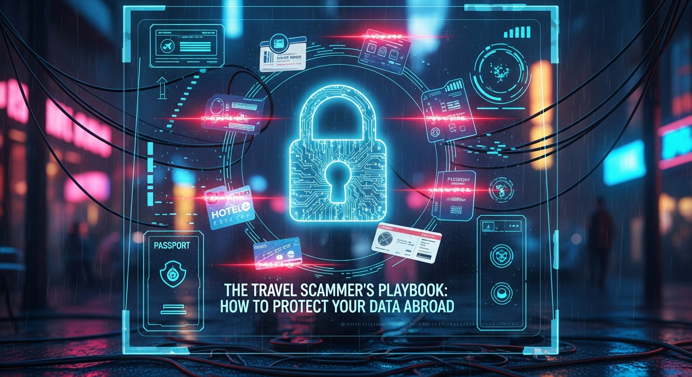

Embarking on an international adventure is often a dream realized, a tapestry woven with new cultures, breathtaking landscapes, and unforgettable experiences. However, beneath the veneer of exotic locales and thrilling itineraries lies a darker, less visible threat: the pervasive and ever-evolving world of data scammers. For the modern traveler, personal data is a precious commodity, and abroad, it becomes particularly vulnerable. From the moment you book your flight to the instant you swipe your card at a foreign market, a sophisticated network of fraudsters is actively seeking to exploit any digital or physical vulnerability you might present. This isn't just about losing a few dollars; it's about the potential compromise of your identity, financial security, and peace of mind, transforming a dream trip into a nightmare. Understanding the intricate strategies employed by these digital predators is the first, crucial step in building an impenetrable defense. This comprehensive guide will dissect the scammer's playbook, revealing their most cunning tactics, and arming you with the knowledge and tools necessary to fortify your digital presence and protect your invaluable data, ensuring your travels remain joyous and secure.
Travel scammers are incredibly resourceful, adapting their methods to exploit new technologies and human vulnerabilities. Their arsenal is diverse, ranging from elaborate digital schemes to deceptively simple physical traps, all designed to pilfer your personal and financial information. One of the most prevalent digital threats is phishing, where fraudsters impersonate legitimate entities like airlines, hotels, or banks through emails, text messages, or even fake websites. These communications often contain urgent pleas or irresistible offers designed to trick you into clicking malicious links or divulging sensitive data directly. A common travel-specific phishing scam might involve a fake flight cancellation notice asking for credit card details to rebook, or a fraudulent hotel confirmation requesting "security verification" that leads to a data harvesting page. The sophistication of these fake sites can be astounding, often mirroring official branding perfectly, making it difficult for an unsuspecting traveler to differentiate between legitimate and malicious requests.
Beyond phishing, the reliance on public Wi-Fi networks abroad presents another significant vulnerability. While convenient for checking emails or navigating, unsecure networks in airports, cafes, or hotels are often breeding grounds for cybercriminals. Attackers can set up "evil twin" Wi-Fi networks that mimic legitimate ones, luring travelers into connecting to their rogue access points. Once connected, they can intercept unencrypted data, monitor browsing activity, or even inject malware onto your devices. This type of attack, often referred to as a "man-in-the-middle" attack, allows scammers to effectively eavesdrop on your digital communications, potentially capturing login credentials, credit card numbers, and other sensitive information transmitted over the network. The allure of free and easily accessible internet can often override caution, making these public networks a prime target for data exploitation.
Physical data theft tactics are equally insidious. Skimming devices, for instance, are tiny, often invisible overlays placed on card readers at ATMs, gas pumps, or even point-of-sale terminals in stores. When you swipe or insert your card, the skimmer copies your card number and other details, while a hidden camera or another device captures your PIN. This information is then used to create cloned cards or make unauthorized online purchases. Travelers, often dealing with unfamiliar machines and distracted by their surroundings, are particularly susceptible to these well-hidden threats. Another low-tech but highly effective method is shoulder surfing, where thieves discreetly observe you entering PINs or passwords at ATMs, public computers, or during transactions. They might then combine this visual information with a stolen wallet or bag to gain full access to your accounts. The physical environment, especially in crowded or unfamiliar places, offers numerous opportunities for such opportunistic data theft.
Finally, social engineering remains a powerful weapon in the scammer's arsenal. This involves manipulating individuals into performing actions or divulging confidential information. Abroad, this can manifest in various ways: a seemingly helpful local offering to assist with an ATM but subtly observing your PIN, a fake police officer demanding to see your passport and wallet for "inspection," or even a romantic interest slowly extracting personal details over time. These scams exploit human trust, politeness, and the natural desire for assistance in an unfamiliar environment. They often play on urgency, authority, or emotional appeals to bypass logical defenses. A classic example is the "lost wallet" scam, where a distressed individual approaches a tourist, asking for money, and in the process, might distract them while an accomplice picks their pocket or glances at their phone. Understanding that not every helpful stranger has benevolent intentions is crucial for protecting your data from these cunning psychological ploys.
In an increasingly interconnected world, your digital devices are extensions of your identity, holding a vast repository of personal and financial data. Protecting them while traveling is paramount, and it begins with a multi-layered approach to digital fortification. The cornerstone of this defense is the implementation of strong, unique passwords for every online account. Reusing passwords across multiple services is akin to using the same key for every lock in your house; if one is compromised, all are at risk. A robust password should be long, complex, and incorporate a mix of uppercase and lowercase letters, numbers, and symbols. Given the difficulty of remembering dozens of unique, complex passwords, a reputable password manager becomes an indispensable tool. These applications securely store all your login credentials, generating strong passwords and autofilling them when needed, thereby eliminating the need for you to remember anything but one master password.
Beyond strong passwords, Two-Factor Authentication (2FA) adds a critical second layer of security. This requires not only something you know (your password) but also something you have (a code from your phone via an authenticator app or SMS) or something you are (a fingerprint or facial scan). Enabling 2FA on all critical accounts—email, banking, social media, and travel platforms—significantly reduces the risk of unauthorized access, even if your password is stolen. Even if a scammer manages to obtain your password through phishing or other means, they would still need access to your physical device or biometric data to log in, making their task exponentially harder. Authenticator apps like Google Authenticator or Authy are generally preferred over SMS-based 2FA, as SMS messages can sometimes be intercepted or SIM-swapped.
When connecting to the internet abroad, especially on public Wi-Fi networks, a Virtual Private Network (VPN) is an absolute necessity. A VPN encrypts your internet connection, creating a secure tunnel between your device and the internet. This encryption scrambles your data, making it unreadable to anyone attempting to intercept it, including hackers on public Wi-Fi networks, internet service providers, or even government surveillance. By routing your internet traffic through a secure server, a VPN also masks your IP address, enhancing your anonymity and making it harder for third parties to track your online activities or pinpoint your physical location. Choosing a reputable, paid VPN service with a strong no-logs policy is crucial, as free VPNs often come with their own security risks or limitations. Before traveling, install and test your chosen VPN on all your devices.
Regularly updating the operating systems and applications on all your devices (smartphones, laptops, tablets) is another non-negotiable aspect of digital fortification. Software updates often include critical security patches that fix vulnerabilities exploited by cybercriminals. Running outdated software leaves gaping holes in your digital defenses, making your devices easy targets for malware and other attacks. Enable automatic updates whenever possible, or make it a habit to check for and install updates promptly. Furthermore, device encryption should be enabled on all your portable devices. Most modern smartphones and laptops offer full-disk encryption, which scrambles all data stored on the device. If your device is lost or stolen, encryption renders the data inaccessible to unauthorized individuals without the correct decryption key, effectively turning stolen hardware into a useless brick for a data thief.
Finally, practicing secure browsing habits is crucial. Always verify the legitimacy of websites before entering sensitive information. Look for "https://" in the URL and a padlock icon in your browser's address bar, indicating a secure, encrypted connection. Be wary of clicking on suspicious links, even if they appear to come from known contacts, as email accounts can be compromised. Consider using a privacy-focused browser and browser extensions that block trackers and malicious ads. Before traveling, back up all your critical data to a secure, encrypted cloud service or an external hard drive. In the unfortunate event of device loss or theft, having a recent backup ensures that your precious memories and important documents are not permanently lost. This combination of proactive measures creates a formidable digital fortress, significantly reducing your vulnerability to data theft while exploring the world.
While technological safeguards are indispensable, the most critical component in preventing data breaches abroad is often overlooked: the human element. You, the traveler, are your own primary defense – the "human firewall." Your awareness, vigilance, and critical thinking skills are powerful deterrents against scammers who prey on distraction, politeness, and a lack of information. One of the most fundamental aspects of being a human firewall is cultivating a healthy sense of skepticism. In unfamiliar environments, the natural inclination might be to trust, but scammers thrive on this. If an offer seems too good to be true, it almost certainly is. If someone demands immediate action or personal information, pause and question their motives, regardless of who they claim to be. Never let urgency override your judgment. A legitimate entity will rarely pressure you into immediate decisions without allowing for verification.
Vigilance extends to your physical surroundings and interactions. Be acutely aware of who is around you when using ATMs, entering PINs at payment terminals, or even accessing sensitive information on your phone in public. Shoulder surfing is a simple but effective technique for data thieves, and a quick glance over your shoulder can prevent it. When using public computers, assume they are compromised and avoid logging into any sensitive accounts. If you must use one, ensure you log out properly and clear your browsing history. Be mindful of your possessions; a moment of distraction can lead to a stolen wallet or phone, providing scammers with immediate access to your physical data and potentially your digital life if your devices are unlocked. Using anti-theft bags or discreet pouches for valuables can significantly reduce this risk.
Avoiding oversharing, both online and offline, is another crucial aspect of being an effective human firewall. While it's tempting to post real-time updates of your adventures on social media, consider the information you're inadvertently revealing. Geo-tagging your exact location, posting photos of your boarding passes (which contain scannable barcodes with personal info), or announcing your precise itinerary can provide valuable intelligence to potential thieves about your whereabouts and when your home might be empty. It's often safer to share your travel experiences after you've returned home. Similarly, be cautious about how much personal information you share with strangers you meet abroad, no matter how friendly they seem. Scammers are adept at building rapport to extract details that can be used for identity theft or targeted phishing attacks.
Understanding and recognizing common social engineering tactics is vital. These ploys manipulate human psychology. For example, the "distraction" scam, where one person creates a diversion (e.g., spilling something on you) while another picks your pocket, is a classic. The "fake authority" scam, where someone impersonates a police officer or official to demand money or documents, preys on respect for authority. Always ask for official identification and, if suspicious, offer to go to the nearest police station or official office to verify their claims. Never hand over your passport, wallet, or phone unless absolutely necessary and verifiable. Your data is not just digital; it's also in your physical documents, and protecting these requires the same level of caution.
Finally, trust your instincts. If a situation feels off, it probably is. If a deal is too good to be true, it usually indicates a scam. If someone is overly insistent or makes you feel uncomfortable, disengage. It's better to be overly cautious than to become a victim. Educating yourself about common travel scams in your destination before you go can also significantly bolster your defenses. Resources from government travel advisories, reputable travel blogs, and even local tourist information centers often highlight prevalent local scams. By combining technological safeguards with a vigilant, skeptical, and informed mindset, you transform yourself into the ultimate human firewall, capable of deflecting the most sophisticated data theft attempts and ensuring a secure and enjoyable journey.
Protect your identity and browse privately with Surfshark One - the all-in-one security suite.
GET 60% OFF SURFSHARK NOWNavigating the digital landscape while traveling requires more than just awareness; it demands the strategic deployment of specialized tools and technologies designed to fortify your data against an array of threats. These solutions act as your digital armor, providing layers of protection that go beyond basic security practices. At the forefront of this arsenal is a robust Virtual Private Network (VPN) service. As mentioned previously, a VPN encrypts your internet traffic, making it unreadable to snoopers on public Wi-Fi networks. However, selecting the right VPN is crucial. Opt for a reputable, paid service like NordVPN, ExpressVPN, or Surfshark, which offer strong encryption protocols, a strict no-logs policy, and a wide network of servers. Avoid free VPNs, as they often compromise on security, collect user data, or have limited functionality, potentially exposing you to more risks than they mitigate. Install your chosen VPN on all your devices – laptop, smartphone, and tablet – and ensure it's active whenever you connect to public or untrusted networks.
A high-quality password manager is another non-negotiable tool for the modern traveler. Services such as LastPass, 1Password, or Bitwarden securely store all your complex, unique passwords behind one master password. They can generate ultra-strong passwords for new accounts and autofill login credentials, eliminating the need to remember dozens of different combinations. This not only enhances security by preventing password reuse but also streamlines the login process, which can be invaluable when you're on the go and need quick, secure access to various accounts like airline portals, banking apps, or booking sites. Many password managers also offer secure note-taking features, allowing you to encrypt and store sensitive travel-related information like hotel confirmation numbers, insurance policy details, or copies of important documents.
For secure communication, particularly when discussing sensitive travel plans or sharing personal information with family and friends, encrypted messaging apps are indispensable. Platforms like Signal or WhatsApp (with end-to-end encryption enabled) ensure that only the sender and intended recipient can read messages, protecting them from interception by third parties. While convenient, standard SMS messages and unencrypted email are not secure for sensitive communications. Using encrypted messaging for coordination can prevent travel details from falling into the wrong hands, which could otherwise be used for targeted scams or to infer your movements.
Beyond digital tools, physical security solutions are equally vital. An RFID-blocking wallet or passport holder is highly recommended. RFID (Radio-Frequency Identification) technology is used in modern passports, credit cards, and some driver's licenses to allow for contactless scanning. While convenient, this also makes them vulnerable to "skimming," where criminals use portable RFID readers to wirelessly steal data from your cards or passport without physical contact. An RFID-blocking wallet contains a material that interferes with radio waves, preventing unauthorized scanning and protecting your identity and financial information from this silent form of theft. Similarly, using a secure, anti-theft bag with slash-proof material, lockable zippers, and discreet pockets can deter pickpockets and bag snatchers, safeguarding your physical devices and documents.
To prepare for the worst-case scenario of device loss or theft, device tracking and remote wiping software are essential. Features like "Find My iPhone" for Apple devices or "Find My Device" for Android phones allow you to locate your device on a map, lock it remotely, display a message, or even erase all data if recovery is impossible. Enabling these features before you travel provides a critical safety net, ensuring that even if your device falls into the wrong hands, your data remains secure and inaccessible. Furthermore, consider setting up secure cloud storage (e.g., Google Drive, Dropbox, OneDrive with encryption) for backing up important documents like passport copies, visa information, flight itineraries, and insurance details. This provides redundant access to vital information, even if your physical documents or devices are lost or stolen, allowing you to retrieve them from any internet-connected device.
Finally, for travelers concerned about deep surveillance or those carrying highly sensitive data, a "burner" phone or local pre-paid SIM card can offer an extra layer of privacy. A burner phone is a cheap, temporary device used for basic communication, leaving your primary, data-rich smartphone less exposed. Using a local SIM card can also provide a dedicated, inexpensive local number for contacts and avoid roaming charges, while potentially separating your primary phone number from overseas interactions. By strategically combining these digital and physical tools, travelers can build a formidable defense against data theft, ensuring their peace of mind and the integrity of their personal information throughout their journey.
The foundation of a data-secure journey is laid long before you step onto the plane. A meticulous pre-departure checklist can significantly mitigate risks, transforming potential vulnerabilities into robust defenses. The very first item on this list should be a comprehensive data backup strategy. Before you leave, perform a full backup of all critical data from your smartphone, laptop, and any other devices you plan to take. This includes photos, videos, important documents, contacts, and any work-related files. Store these backups on an encrypted external hard drive or, even better, in a secure cloud storage service. Having a recent backup ensures that in the unfortunate event of device loss, theft, or damage, your precious memories and essential information are not permanently lost. This also allows you to confidently wipe a stolen device, knowing your data is safe elsewhere.
Next, conduct a thorough device audit and cleanup. Evaluate which devices you truly need to bring. The fewer devices you travel with, the fewer potential points of compromise. For devices you do bring, uninstall any unnecessary applications, especially those that hold sensitive data or have broad permissions. Log out of non-essential accounts. Ensure all your operating systems and applications are updated to their latest versions, as these updates often include critical security patches. Enable full-disk encryption on your laptops and smartphones. For laptops, consider creating a separate, limited-privilege user account for travel, and only use your administrative account when absolutely necessary. This compartmentalization can limit the damage if the travel account is compromised.
Prior to departure, it's crucial to notify your financial institutions and credit card companies of your travel plans. Informing them about the dates and countries you'll be visiting helps prevent your cards from being flagged for suspicious activity and potentially frozen due to transactions from unexpected locations. This proactive communication can save you significant hassle and ensure uninterrupted access to your funds. Additionally, inquire about their fraud monitoring services and how they will contact you if suspicious activity is detected. Set up transaction alerts via SMS or email for all your credit and debit cards, so you are immediately notified of any charges, allowing you to spot unauthorized transactions swiftly.
Consider the implications of your digital footprint. Before you leave, review your social media privacy settings and make them more restrictive. Avoid posting your exact itinerary or real-time location updates. It's often safer to share your travel experiences retrospectively. Also, prepare copies of essential documents. Make physical and digital copies of your passport, visas, flight tickets, hotel reservations, travel insurance policy, and emergency contact information. Store digital copies in a secure, encrypted cloud service and keep physical copies separate from the originals. Leave a copy of your itinerary and emergency contacts with a trusted person back home.
Familiarize yourself with the local laws and customs regarding digital privacy and data retention in your destination countries. Some countries have strict surveillance laws or may require access to your devices upon entry. Understanding these regulations can help you make informed decisions about what data to carry on your devices. For instance, if you're traveling to a country known for demanding device access, you might consider bringing a "clean" device with minimal personal data. Finally, invest in a comprehensive travel insurance policy that covers not only medical emergencies and trip cancellations but also theft of personal belongings, including electronics. While insurance won't protect your data, it can provide financial recourse if your devices are stolen, allowing you to replace them without significant financial strain. This meticulous preparation transforms your journey from a potential data risk into a secure and enjoyable experience, giving you the peace of mind to truly immerse yourself in your adventure.
Despite the most diligent preparation and vigilance, data compromise can still occur. Whether it's a stolen device, an unauthorized transaction, or a successful phishing attack, knowing how to react swiftly and strategically is crucial to minimizing damage and recovering your digital security. The immediate aftermath of a data breach is critical, and prompt action can significantly limit the fallout. The very first step, if you suspect your data has been compromised, is to act immediately and decisively. Time is of the essence, as every moment lost provides scammers with more opportunities to exploit your information.
If a device (smartphone, laptop, tablet) is lost or stolen, your priority should be to secure its data. Use your pre-enabled device tracking software (e.g., "Find My iPhone," "Find My Device") to attempt to locate it. If recovery seems unlikely, or if you believe the device contains highly sensitive information, initiate a remote wipe to erase all data. This is a drastic but often necessary step to prevent unauthorized access to your personal... and implement these strategies to ensure long-term success.
In summary, staying ahead of these trends is the key to business longevity and security. By following this guide, you maximize your growth and ensure a stable digital future.
Don't wait for the headlines. Our Private Telegram Channel delivers real-time AI security updates and digital wealth strategies before they go viral. Stay protected. Stay ahead.
⚡ JOIN THE 1% NOW